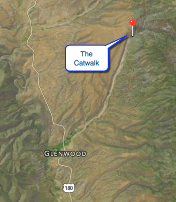
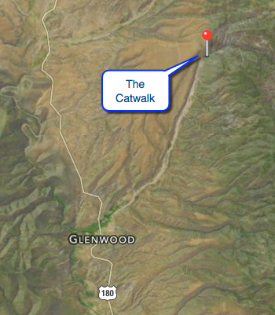

Hike New Mexico
w/ Tom & Ken
The Catwalks of Whitewater Canyon
| Difficulty | Round-trip | Type | Elev. Chg. | Exposure | Wow Factor | Facilities | Seasons | Get There |
|---|---|---|---|---|---|---|---|---|
| Easy | 1.5 miles | Out-and-back | 100 ft | Sun, some shade | Manmade walk | None? | All | Directions |


 

- Sep 20, 2004: Before the flood - catwalks in the canyon
- Sep 20, 2004: Trail into the rock
- Sep 20, 2004: Water in the canyon
- Sep 20, 2004: Leaving the canyon onto the trail
- Sep 20, 2004: Exiting the canyon affords multiple views
- Sep 20, 2004: Catwalks has many perspectives
- https://www.flickr.com/photos/139088815@N08/25283512391/in/album-72157662925553623
- https://www.flickr.com/photos/139088815@N08/25283557711/in/album-72157662925553623
- https://www.flickr.com/photos/139088815@N08/25350418576/in/album-72157662925553623
- https://www.flickr.com/photos/139088815@N08/25008961609/in/album-72157662925553623
- https://www.flickr.com/photos/139088815@N08/25350397706/in/album-72157662925553623
- https://www.flickr.com/photos/139088815@N08/25081011490/in/album-72157662925553623
The Catwalks of Whitewater Canyon were constructed by the CCC to provide visitor access to the region (see links below). A short stretch of the hike takes you through the canyon on a suspended mesh "catwalk", and then exits and continues on a lovely forest trail. The canyon was flooded out and inaccessible in 2013, but is reopening in May 2016. The area is remote, and there are no "big" cities nearby, the closest being Silver City. The site is near Glenwood, NM. The following two references provide some interesting history about the area: The National Scenic Trail, and a little more perspective in the blog. The Flickr ablum contains quite a few more pictures.